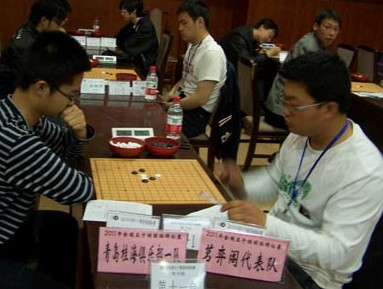
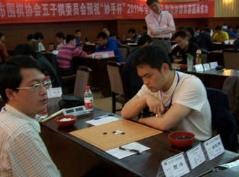

2011年的全团结束了,这次比赛比较匆忙,成绩也不是很理想,但我打心眼里感到高兴.他们能和强劲的北京,上海,棋心等团队对弈,得到了很好的锻炼,相信他们的收获也不小,对自己的不足有了更深刻的认识.我坚信在来年里,他们的进步一定会突飞猛进.
其实这个总结我想表达的意思是2个字:感谢.
首先感谢赞助这次比赛的棋友们,你们的爱心让我热泪盈眶.
感谢参加这次比赛的队员们,为你们对家族的热爱和对五子的坚持追求与热忱喝彩!
感谢领队弱惜,您辛苦了!在您的照顾带领下,团队顺利安全的完成了比赛,也没谁生病.队员相处非常融洽,这是我们茗弈团结的象征，也是为以后的比赛开了个好头！
［此帖子已被 茗弈宽容 在 2011-5-3 9:46:34 编辑过］
［ 安娜制作所 于 2011-5-3 9:47:34 时奖励此帖[金币加 100 威望加1］
［ 灯塔连珠 于 2011-5-3 9:57:13 时花20金币送鲜花一朵］
［ 消逝的雨 于 2011-5-3 10:40:08 时花20金币送鲜花一朵］
［ 消逝的雨 于 2011-5-3 10:40:20 时花20金币送鲜花一朵］
［ 茗弈七夜 于 2011-5-3 11:41:46 时花20金币送鲜花一朵］
［ 茗弈七夜 于 2011-5-3 11:41:55 时花20金币送鲜花一朵］
［ 茗弈七夜 于 2011-5-3 11:42:03 时花20金币送鲜花一朵］
［ 三国老凯 于 2011-5-3 16:08:54 时花20金币送鲜花一朵］
［ 三国老凯 于 2011-5-3 16:09:01 时花20金币送鲜花一朵］
［ 三国老凯 于 2011-5-3 16:09:09 时花20金币送鲜花一朵］
［ 淡月疏星 于 2011-5-5 11:40:22 时花20金币送鲜花一朵］
感谢 感恩！
［ 茗弈小刀 于 2011-5-3 9:55:28 时奖励此帖[金币加 100 威望加1］
［ 茗弈小刀 于 2011-5-3 10:05:34 时花20金币送鲜花一朵］
［ 茗弈小刀 于 2011-5-3 12:46:43 时花20金币送鲜花一朵］
顶师傅啦~这次全团，全部变成内战了。先和菜包，又杀灵石。
没成想还是对上了茗弈队，我送出一个超级大漏斗，也算是对得起师傅了
［ 茗弈小刀 于 2011-5-3 12:45:18 时花20金币送鲜花一朵］
［ 茗弈小刀 于 2011-5-3 12:43:57 时花20金币送鲜花一朵］
夜儿,赛场如战场,无论你代表哪里,你都应该认真对待,全力以赴去下好每盘棋!首先我们要对得起自己对吗?加油宝贝!
22的目的就是为了让你下这个23来实现简单抓的，因为我看见你思考21手的时候，一眼都没有注意右边的棋子，所以我认为我下23之后你还是会在这个局部强防的
［ 茗弈小刀 于 2011-5-3 18:11:26 时奖励此帖[金币加 100 威望加1］
 心态还是不好
心态还是不好［此帖子已被 三国老凯 在 2011-5-3 17:11:54 编辑过］
［ 茗弈小刀 于 2011-5-3 17:18:27 时奖励此帖[金币加 100 威望加1］
打心里佩服弱惜，好样的，顶一下，不容易啊不容易
［ 茗弈小刀 于 2011-5-4 16:04:39 时花20金币送鲜花一朵］


在中国连珠网上找的，但没找到我小棉袄的照片~，下次记得带相机去哟！
大家都辛苦了啊，谢谢大家
［ 茗弈小刀 于 2011-5-5 15:08:06 时花20金币送鲜花一朵］